Código
library(tidyverse)
library(kableExtra)
library(DiagrammeR)
ggplot2::theme_set(ggplot2::theme_light())library(tidyverse)
library(kableExtra)
library(DiagrammeR)
ggplot2::theme_set(ggplot2::theme_light())En problemas que no son muy simples, para hacer inferencia usamos modelos probabilísticos. En esta parte veremos una manera de visualizar estos modelos que
Antes de hablar específicamente de problemas de inferencia causal, introduciremos notación y repasaremos algunos conceptos de probabilidad multivariada.
Si \(X\) es una variable aleatoria, abusaremos de la notación escribiendo \(p(x)\) para denotar su función de densidad (continua o discreta). Si \(X\) es discreta, \(p(x)=P(X=x)\), y si \(X\) es continua, entonces \(p(x)\) es la función de densidad, que utilizamos para calcular probabilidades usando integrales, por ejemplo
\[P(X \in [a,b]) = \int_a^b p(x)\, dx\] Ojo: en algunos casos, para evitar reescribir fórmulas, usaremos esta misma notación para denotar probabilidades de variables discretas, que más apropiadamente escribiríamos como \(P(X\in[a,b]) = \sum_{x=a}^{b} P(X = x)\).
Si \(X\) y \(Y\) son variables aleatorias, entonces denotamos por \(p(x,y)\) a su densidad conjunta. Podemos calcular las distribuciones de x y y integrando sobre una de las variables
\[p(y) = \int_{-\infty}^{\infty} p(x,y)dx = \int p(x,y)dx\] Nótese que abusamos algo de la notación quitando los límites de la integral de la derecha (y recordamos que si \(X\) es discreta, entonces usamos una suma en lugar de una integral). En este contexto, \(p(x), p(y)\) se llaman distribuciones marginales de \(X\) y \(Y\)
Denotamos por \(p(y|x)\) y \(p(x|y)\) a las densidades condicionales de Y dado X y X dada Y respectivamente. Estas están definidas por
\[p(y|x) = \frac{p(x, y)}{p(x)}\] Esta densidad condicional nos dice cómo se distribuye \(Y\) cuando sabemos que \(X=x\).
De esta definición, tenemos la regla del producto que establece que
\[p(x,y) = p(y|x) p(x) = p(x|y)p(y) \]
Cuando la distribución condicional de \(p(y|x)\) cambia dependiendo de la \(x\), decimos que \(X\) y \(Y\) está asociadas. Si no es el caso, decimos que son independientes. Esto quiere decir que
\[p(y|x) = p(y)\] es decir, la condicional de \(Y\) dada \(X\) es igual a la marginal de \(Y\). Por definición, la independencia también se puede escribir como una versión simplificada de la regla del producto:
\[p(x,y) = p(x)p(y)\] es decir, la conjunta se factoriza en una parte que sólo depende de \(x\) y otra que sólo dependen de \(y\).
Una manera útil de construir modelos de probabilidad conjuntas con variables que tienen dependencias es utilizando una factorización de la regla del producto, lo cual nos permite concentrarnos en una variable a la vez.
Dependiendo del tipo de problema, puede ser más conveniente definir \(p(x)\) y \(p(y|x)\) o \(p(y)\) y \(p(x|y)\). En ambos casos podemos calcular la conjunta \(p(x,y)\) con la que podemos calcular cualquier probabilidad conjunta de interés o cantidad resumen que involucra a a estas dos variables aleatorias.
Supongamos que \(X\) es el resultado de una tirada de dado, y que \(Y\) es el número de soles que obtenemos en \(X\) volados de una moneda justa.
Entonces podemos escribir \(p(x) = 1/6\) para \(x=1,2,\ldots, 6\), es decir, \(X\) es Uniforme en \(\{1,2,3,4,5,6\}\), y \(Y|X=x\) son el número de soles en \(x\) volados, de modo que es Binomial con parámetros \((x, 0.5)\). Esto lo podemos escribir como
\[\begin{equation} \begin{split} Y|X \sim & Bin(X, 0.5) \\ X = & U(\{1,2,3,4,5,6\}) \end{split} \end{equation}\]
Estas variables no son independientes, pues la condicional de \(Y\) cambia dependiendo del valor que toma \(X\).
Como estas dos variables son discretas, la conjunta puede escribirse con la regla del producto como una tabla como sigue:
probs_x <- tibble(x = 1:6, p_x = 1/6)
probs_conjunta <- crossing(probs_x, y = seq(0, 6, 1)) |>
mutate(p_cond_y = dbinom(y, size = x, prob = 0.5)) |>
mutate(p = p_cond_y * p_x) #producto
probs_conjunta |> select(x, y, p) |>
pivot_wider(names_from = x, values_from = p, names_prefix = "x=") |>
kable(digits = 4) |> kable_paper()| y | x=1 | x=2 | x=3 | x=4 | x=5 | x=6 |
|---|---|---|---|---|---|---|
| 0 | 0.0833 | 0.0417 | 0.0208 | 0.0104 | 0.0052 | 0.0026 |
| 1 | 0.0833 | 0.0833 | 0.0625 | 0.0417 | 0.0260 | 0.0156 |
| 2 | 0.0000 | 0.0417 | 0.0625 | 0.0625 | 0.0521 | 0.0391 |
| 3 | 0.0000 | 0.0000 | 0.0208 | 0.0417 | 0.0521 | 0.0521 |
| 4 | 0.0000 | 0.0000 | 0.0000 | 0.0104 | 0.0260 | 0.0391 |
| 5 | 0.0000 | 0.0000 | 0.0000 | 0.0000 | 0.0052 | 0.0156 |
| 6 | 0.0000 | 0.0000 | 0.0000 | 0.0000 | 0.0000 | 0.0026 |
Nótese adicionalmente que la forma en que planteamos el problema naturalmente nos da un modelo generativo, es decir, podemos simular fácilmente realizaciones de esta conjunta particular:
simular_juego <- function(n = 1, x = NULL){
if(is.null(x)){
x <- sample(1:6, n, replace = TRUE)
}
y <- rbinom(n, x, prob = 0.5)
tibble(n = seq_len(n), x = x, y = y)
}
set.seed(880)
simular_juego(n = 5)# A tibble: 5 × 3
n x y
<int> <int> <int>
1 1 5 3
2 2 5 1
3 3 3 1
4 4 6 4
5 5 4 3Y usando simulación podemos estimar cualquier cantidad de interés acerca de las variables \(X\) y \(Y\). Por ejemplo, su correlación la estimamos con
simular_juego(n = 10000) |> select(x, y) |> cor() x y
x 1.0000000 0.6716973
y 0.6716973 1.0000000Supongamos que \(W\) es una el peso de una persona y \(H\) su estatura. Podemos comenzar con la factorización \(p(w,h) = p(h)p(w|h)\). Un modelo generativo podría ser el que sigue: \(H\) es Normal con media 165 y desviación estandar 12,
\[H \sim N(170, 12) \]
y dada la estatura \(H=h\), el peso es
\[W|H=h \sim N(m_h, 10)\] donde
\[m_h = -50 + 0.7 h\]
sim_wh <- function(n = 10){
h <- rnorm(n, 170, 12)
m_h <- -50 + 0.7 * h
w <- rnorm(n, m_h, 10)
tibble(w = w, h = h)
}set.seed(992)
sims <- sim_wh(500)
ggplot(sims, aes(x = h, y = w)) + geom_point()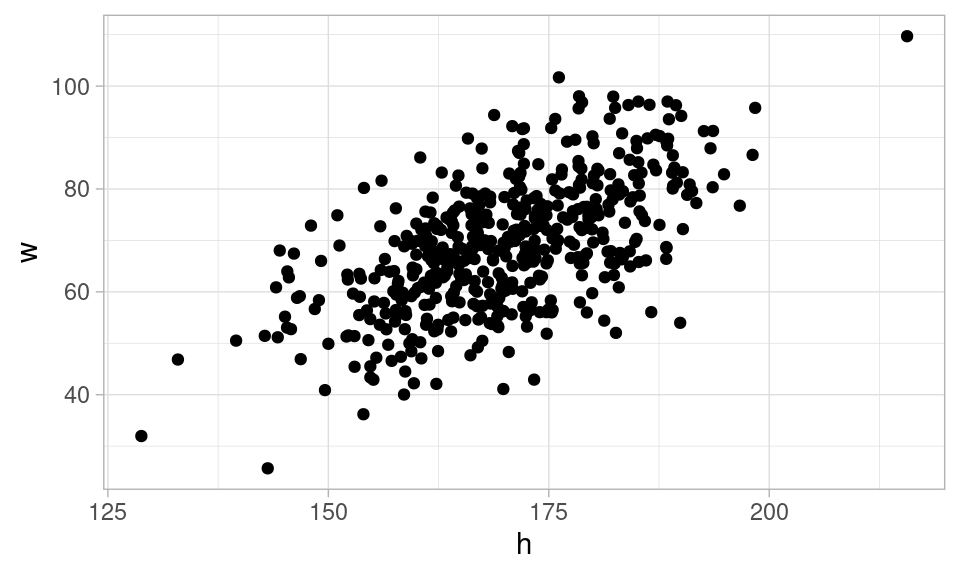
También escribimos este modelo en stan:
mod_peso <- cmdstanr::cmdstan_model("../src/peso_estatura.stan")
print(mod_peso)data {
int<lower=0> N;
}
parameters {
}
transformed parameters {
}
model {
}
generated quantities {
real<lower=0> h;
real<lower=0> w;
h = normal_rng(170, 12);
real m_w = -50 + 0.7 * h;
w = normal_rng(m_w, 10);
}datos_lista <- list(N = 500)
ajuste <- mod_peso$sample(data = datos_lista, refresh = 1000, fixed_param = TRUE)Running MCMC with 4 sequential chains...
Chain 1 Iteration: 1 / 1000 [ 0%] (Sampling)
Chain 1 Iteration: 1000 / 1000 [100%] (Sampling)
Chain 1 finished in 0.0 seconds.
Chain 2 Iteration: 1 / 1000 [ 0%] (Sampling)
Chain 2 Iteration: 1000 / 1000 [100%] (Sampling)
Chain 2 finished in 0.0 seconds.
Chain 3 Iteration: 1 / 1000 [ 0%] (Sampling)
Chain 3 Iteration: 1000 / 1000 [100%] (Sampling)
Chain 3 finished in 0.0 seconds.
Chain 4 Iteration: 1 / 1000 [ 0%] (Sampling)
Chain 4 Iteration: 1000 / 1000 [100%] (Sampling)
Chain 4 finished in 0.0 seconds.
All 4 chains finished successfully.
Mean chain execution time: 0.0 seconds.
Total execution time: 0.7 seconds.sims <- ajuste$draws(c("h", "w"), format = "df")
resumen <- ajuste$summary(c("h", "w"))
resumen |> select(variable, mean, q5, q95)# A tibble: 2 × 4
variable mean q5 q95
<chr> <dbl> <dbl> <dbl>
1 h 170. 151. 189.
2 w 69.0 47.4 90.5ggplot(sims, aes(x = h, y = w)) + geom_point()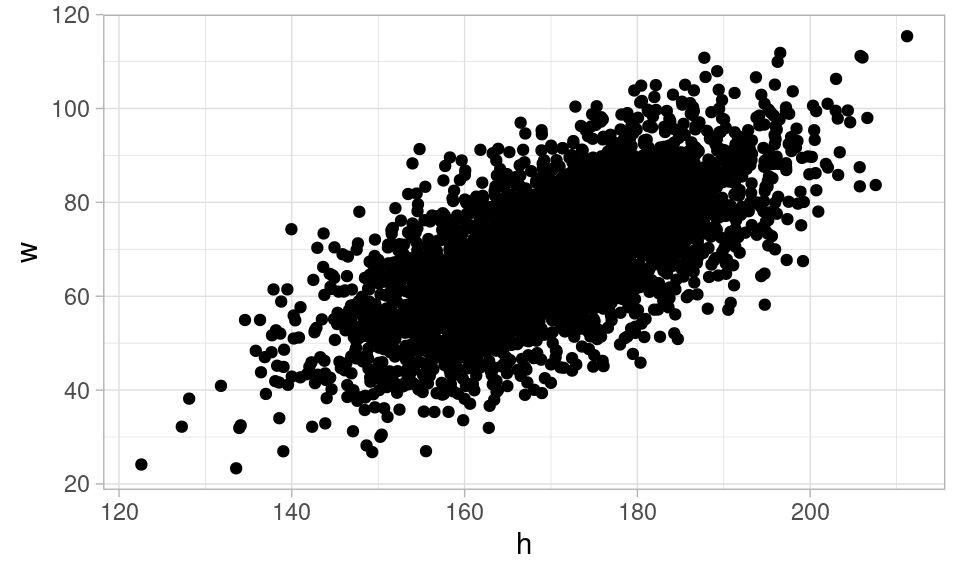
Supongamos que tenemos \(X_1,\ldots, X_p\) variables aleatorias. Denotamos su conjunta con \[p(x_1, x_2, \ldots, x_n)\] En el caso particular de 3 variables p(x,y,z) la regla del producto se escribe como
\[p(x,y,z) = p(z|x,y)p(y|x)p(x)\] que podemos escribir, dependiendo del problema, en cualquiera de las seis permutaciones posibles, por ejemplo:
\[p(x,y,z) = p(x|y,z)p(y|z)p(z)\]
El proceso de simulación lo podemos mostrar gráficamente como sigue:
grViz("
digraph {
graph [ranksep = 0.2]
node [shape=plaintext]
X
Y
Z
edge [minlen = 3]
Z -> Y
Y -> X
Z -> X
{ rank = same; Z; Y }
}
", width = 200, height = 50)Nótese que este ejemplo puede aplicarse a cualquier conjunta nos interese, pues la factorización resulta de la regla del producto.
Supongamos que escogemos al azar un número \(X\) entre 0 y 1, y luego tiramos dos veces cinco volados con probabilidad de sol \(X\). Medimos el número de soles en cada prueba como \(S_1\) y \(S_2\).
En este caso, es natural escribir la factorización:
\[p(x,s_1,x_2) = p(s_2|s_1,x)p(s_1|x)p(x).\] Sin embargo, podemos simplificar aún más esta conjunta, pues en realidad una vez que sabemos X, el resultado de \(S_1\) no cambia la distribución de \(S_2\), de forma que para el proceso que describimos arriba,
\[p(x, s_1, s_2) = p(s_2|x)p(s_1|x)p(x).\] En este caso, en nuestros supuestos está la independencia condicional de \(S_1\) y \(S_2\) dado \(X\), que explicaremos con detalle más adelante. El diagrama relevante es
grViz("
digraph {
graph [ranksep = 0.2]
node [shape=plaintext]
X
S1 [label = <S<SUB>1</SUB>>]
S2 [label = <S<SUB>2</SUB>>]
edge [minlen = 3]
X -> S1
X -> S2
{ rank = same; S1; S2 }
}
", width = 200, height = 50)Y podemos hacer simulaciones de este proceso generador:
simular_dos <- function(n = 10, x = NULL){
if(is.null(x)){
x <- runif(n)
}
s_1 <- rbinom(n, 5, prob = x)
s_2 <- rbinom(n, 5, prob = x)
tibble(x = x, s_1 = s_1, s_2 = s_2)
}
set.seed(116)
sims_monedas <- simular_dos(5000)
head(sims_monedas)# A tibble: 6 × 3
x s_1 s_2
<dbl> <int> <int>
1 0.741 4 4
2 0.336 5 2
3 0.193 1 1
4 0.281 1 2
5 0.998 5 5
6 0.534 3 5Nótese que aún cuando simulamos independientemente \(S_1\) y \(S_2\) una vez que tenemos el dado, \(S_1\) y \(S_2\) no son independientes:
ggplot(sims_monedas, aes(x = s_1, y = s_2)) + geom_jitter(width = 0.25, height = 0.25)
Regresamos al ejemplo de estatura y peso. Supongamos que agregamos una variable adicional \(S\) que vale 1 cuando la persona es hombre y 0 si no. Podemos discutir distintas maneras de construir nuestro modelo, por ejemplo, supongamos que usamos:
grViz("
digraph {
graph [ranksep = 0.2]
node [shape=plaintext]
S
H
W
edge [minlen = 3]
S -> H
H -> W
S -> W
{ rank = same; S; H; W }
}
", width = 200, height = 50)En este caso, para definir nuestro modelo generativo tenemos que definir \(p(z)\), \(p(h|z)\) y finalmente \(p(w|h,z)\). En este caso, consideramos que además de que los hombres tienen estatura mayor y por tanto mayor peso, existe un efecto adicional que, entre hombres y mujeres de la misma estatura, los hombres tienden a ser más un poco más pesados.
En este modelo, podríamos argumentar que hay, por ejemplo:
Dada el diagrama, consideramos un modelo generativo como sigue:
mod_peso <- cmdstanr::cmdstan_model("../src/peso_estatura_2.stan")
print(mod_peso)data {
int<lower=0> N;
}
parameters {
}
transformed parameters {
}
model {
}
generated quantities {
int<lower=0> s;
real<lower=0> h;
real<lower=0> w;
// simulamos hombre o mujer
s = bernoulli_rng(0.5);
// simular estatura dado el sexo
real m_h = 15 * s + 160;
h = normal_rng(m_h, 12);
// simular peso dado estatura y sexo
real m_w = -50 + 5 * s + 0.7 * h;
w = normal_rng(m_w, 10);
}datos_lista <- list(N = 500)
ajuste <- mod_peso$sample(data = datos_lista, refresh = 1000, fixed_param = TRUE)Running MCMC with 4 sequential chains...
Chain 1 Iteration: 1 / 1000 [ 0%] (Sampling)
Chain 1 Iteration: 1000 / 1000 [100%] (Sampling)
Chain 1 finished in 0.0 seconds.
Chain 2 Iteration: 1 / 1000 [ 0%] (Sampling)
Chain 2 Iteration: 1000 / 1000 [100%] (Sampling)
Chain 2 finished in 0.0 seconds.
Chain 3 Iteration: 1 / 1000 [ 0%] (Sampling)
Chain 3 Iteration: 1000 / 1000 [100%] (Sampling)
Chain 3 finished in 0.0 seconds.
Chain 4 Iteration: 1 / 1000 [ 0%] (Sampling)
Chain 4 Iteration: 1000 / 1000 [100%] (Sampling)
Chain 4 finished in 0.0 seconds.
All 4 chains finished successfully.
Mean chain execution time: 0.0 seconds.
Total execution time: 0.5 seconds.sims <- ajuste$draws(c("s", "h", "w"), format = "df")
resumen <- ajuste$summary(c("h", "w"))
resumen |> select(variable, mean, q5, q95)# A tibble: 2 × 4
variable mean q5 q95
<chr> <dbl> <dbl> <dbl>
1 h 168. 144. 191.
2 w 70.1 45.3 95.1ggplot(sims, aes(x = h, y = w, colour = factor(s))) + geom_point() +
geom_smooth(se = FALSE)`geom_smooth()` using method = 'gam' and formula = 'y ~ s(x, bs = "cs")'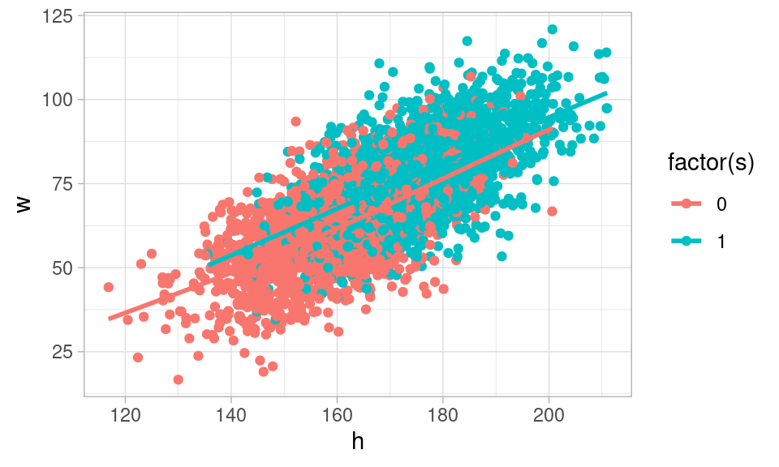
En estos ejemplos, estamos usando modelos lineales sin interacciones, pero en realidad podríamos incluír no linealidad (en forma de splines o modelos teóricos) o interacciones, por ejemplo
En todos los casos, es importante checar los modelos que hemos construido (ver flujo bayesiano).
Ejercicios:
Nótese que en muchos casos, la estructura que genera los datos puede incluir variables que no hemos medido. No siempre es una buena idea quitar estas variables porque simplemente nos las conocemos. Dado el proceso generador, no tendría mucho sentido escribir \(S_1 \to S_2\) o \(S_2 \to S_1\) (aunque podríamos construir tales modelos).
En este caso, podríamos mejor escribir:
grViz("
digraph {
graph [ranksep = 0.2]
node [shape=circle]
X
node [shape=plaintext]
S1 [label = <S<SUB>1</SUB>>]
S2 [label = <S<SUB>2</SUB>>]
edge [minlen = 3]
X -> S1
X -> S2
{ rank = same; S1; S2 }
}
", width = 200, height = 50)La estructura del modelo junto con la naturaleza de las relaciones que conocemos nos permitirá hacer inferencia sobre esas variables no observadas, por ejemplo:
mod_monedas <- cmdstanr::cmdstan_model("../src/monedas.stan")
print(mod_monedas)data {
int<lower=0> s_1;
int<lower=0> s_2;
}
parameters {
real<lower=0, upper = 1> x;
}
model {
x ~ uniform(0, 1);
s_1 ~ binomial(5, x);
s_2 ~ binomial(5, x);
}datos_lista <- list(s_1 = 5, s_2 = 3)
ajuste <- mod_monedas$sample(data = datos_lista, refresh = 1000)Running MCMC with 4 sequential chains...
Chain 1 Iteration: 1 / 2000 [ 0%] (Warmup)
Chain 1 Iteration: 1000 / 2000 [ 50%] (Warmup)
Chain 1 Iteration: 1001 / 2000 [ 50%] (Sampling)
Chain 1 Iteration: 2000 / 2000 [100%] (Sampling)
Chain 1 finished in 0.0 seconds.
Chain 2 Iteration: 1 / 2000 [ 0%] (Warmup)
Chain 2 Iteration: 1000 / 2000 [ 50%] (Warmup)
Chain 2 Iteration: 1001 / 2000 [ 50%] (Sampling)
Chain 2 Iteration: 2000 / 2000 [100%] (Sampling)
Chain 2 finished in 0.0 seconds.
Chain 3 Iteration: 1 / 2000 [ 0%] (Warmup)
Chain 3 Iteration: 1000 / 2000 [ 50%] (Warmup)
Chain 3 Iteration: 1001 / 2000 [ 50%] (Sampling)
Chain 3 Iteration: 2000 / 2000 [100%] (Sampling)
Chain 3 finished in 0.0 seconds.
Chain 4 Iteration: 1 / 2000 [ 0%] (Warmup)
Chain 4 Iteration: 1000 / 2000 [ 50%] (Warmup)
Chain 4 Iteration: 1001 / 2000 [ 50%] (Sampling)
Chain 4 Iteration: 2000 / 2000 [100%] (Sampling)
Chain 4 finished in 0.0 seconds.
All 4 chains finished successfully.
Mean chain execution time: 0.0 seconds.
Total execution time: 0.5 seconds.sims <- ajuste$draws(c("x"), format = "df")
resumen <- ajuste$summary(c("x"))
resumen |> select(variable, mean, q5, q95)# A tibble: 1 × 4
variable mean q5 q95
<chr> <dbl> <dbl> <dbl>
1 x 0.751 0.529 0.920De modo que con alta probabilidad, escogimos una \(X\) entre .5 y 0.93.
En 2020 se hizo un estudio de seroprevalencia de COVID en Santa Clara, California.
Se tomó una muestra de individuos (ver los detalles en el artículo original). Para propósitos de este análisis supondremos que la muestra puede considerarse como aleatoria simple.
Se obtuvieron 3,300 individuos, y 50 de ellos resultaron con prueba positiva (1.5%). Sin embargo, el kit de prueba que estaban utilizando, tienen cierta especificidad y sensibilidad menores a 1. En pruebas de gold standard, el kit identificó correctamente como positivos a 103 de 122 personas infectadas, e identificó correctamente como negativos a 399 de 401 personas no infectadas.
Construiremos ahora una gráfica que indica cómo es el proceso generador de datos. En primer lugar, no interesa estimar la seropositividad en una población dada, que suponemos fue muestreada al azar. Nosotros solamente observamos si la prueba que usamos es positiva o negativa. Escribimos entonces para empezar:
grViz("
digraph {
graph [ranksep = 0.2]
node [shape=circle]
prev
Inf
node [shape=plaintext]
Inf
Positivos
N
edge [minlen = 3]
prev -> Inf
Inf -> Positivos
N -> Inf
}
", width = 150, height = 60)Nótese que estamos pensando de forma causal al dibujar las aristas:
\(N\) (el tamaño de muestra) es una variable que controlamos. No está determinada por la prevalencia. La flecha debe ser \(prev \to Inf\), pues sabemos que si la prevalencia es diferente, entonces el número de personas con infección previa tiene una distribución diferente. Sin embargo, si intervenimos y cambiamos por alguna razón la variable \(Inf\), claramente esto no tiene ningún efecto en \(p\) ni en \(N\).
\(Inf\) influye en la distribución de positivos, y el número de positivos está determinado solamente por las características de la prueba. Nótese que si sabemos \(Inf\), entonces el número de positivos no influye en en \(p\) ni en \(N\), y que cambiar la prueba por ejemplo, no cambia la distribución de la variable \(Inf\). De modo que la única flecha que debemos agregar es \(Inf \to Positivos\).
Aunque podríamos agregar muchos factores que influyen en la prevalencia, estas variables no afectan directamente a otras variables de nuestro diagrama. Dado que no nos interesa contestar este tipo de preguntas, omitimos estas variables.
Un camino sería ahora decidir que \(Inf=Positivos\), es decir no son releventes las características de la prueba, y proceder con la inferencia. Sin embargo, la pregunta qué tenemos qué hacer, es ¿puede ser que las características de la prueba influyan considerablemente en las estimaciones que obtenemos?
Antes de proceder a incluir las características de la prueba, haremos el análisis pensando que el error de medición no es importante:
#! message: false
library(cmdstanr)This is cmdstanr version 0.5.3- CmdStanR documentation and vignettes: mc-stan.org/cmdstanr- CmdStan path: /home/runner/.cmdstan/cmdstan-2.31.0- CmdStan version: 2.31.0mod_sc <- cmdstan_model("../src/sclara-simple.stan")
print(mod_sc)data {
int<lower=0> N;
int<lower=0> n;
}
parameters {
real<lower=0, upper=1> p; //seroprevalencia
}
transformed parameters {
real<lower=0, upper=1> prob_pos;
prob_pos = p;
}
model {
// modelo de número de positivos
n ~ binomial(N, prob_pos);
p ~ beta(1.0, 10.0);
}n <- 50
N <- 3300
datos_lista <- list(N = 3300, n = 50)
ajuste <- mod_sc$sample(data = datos_lista, refresh = 1000)Running MCMC with 4 sequential chains...
Chain 1 Iteration: 1 / 2000 [ 0%] (Warmup)
Chain 1 Iteration: 1000 / 2000 [ 50%] (Warmup)
Chain 1 Iteration: 1001 / 2000 [ 50%] (Sampling)
Chain 1 Iteration: 2000 / 2000 [100%] (Sampling)
Chain 1 finished in 0.0 seconds.
Chain 2 Iteration: 1 / 2000 [ 0%] (Warmup)
Chain 2 Iteration: 1000 / 2000 [ 50%] (Warmup)
Chain 2 Iteration: 1001 / 2000 [ 50%] (Sampling)
Chain 2 Iteration: 2000 / 2000 [100%] (Sampling)
Chain 2 finished in 0.0 seconds.
Chain 3 Iteration: 1 / 2000 [ 0%] (Warmup)
Chain 3 Iteration: 1000 / 2000 [ 50%] (Warmup)
Chain 3 Iteration: 1001 / 2000 [ 50%] (Sampling)
Chain 3 Iteration: 2000 / 2000 [100%] (Sampling)
Chain 3 finished in 0.0 seconds.
Chain 4 Iteration: 1 / 2000 [ 0%] (Warmup)
Chain 4 Iteration: 1000 / 2000 [ 50%] (Warmup)
Chain 4 Iteration: 1001 / 2000 [ 50%] (Sampling)
Chain 4 Iteration: 2000 / 2000 [100%] (Sampling)
Chain 4 finished in 0.0 seconds.
All 4 chains finished successfully.
Mean chain execution time: 0.0 seconds.
Total execution time: 0.5 seconds.sims <- ajuste$draws(c("p"), format = "df")
resumen <- ajuste$summary(c("p"))resumen |> select(variable, mean, q5, q95)# A tibble: 1 × 4
variable mean q5 q95
<chr> <dbl> <dbl> <dbl>
1 p 0.0154 0.0120 0.0192Y podemos graficar la posterior de la seroprevalencia:
ggplot(sims, aes(x = p)) +
geom_histogram()`stat_bin()` using `bins = 30`. Pick better value with `binwidth`.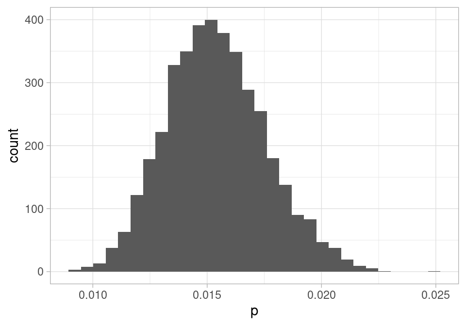
Donde parece ser que la prevalencia está muy probablemente por arriba de 1.2% Si este es el caso, esto implicaría que el subconteo de infecciones era muy grande, y que el IFR es más bajo de lo que se creía.
Sin embargo, observamos positivos en la prueba, y no realmente si alguien se ha infectado o no. Ahora incluimos sensibilidad y especificidad:
grViz("
digraph {
graph [ranksep = 0.2]
node [shape=circle]
prev
Inf
sens
esp
node [shape=plaintext]
Inf
Positivos
N
edge [minlen = 3]
prev -> Inf
Inf -> Positivos
N -> Inf
sens -> Positivos
esp -> Positivos
}
", width = 150, height = 60)Finalmente, tenemos los datos de las pruebas de gold estándar que se hicieron para las pruebas. Esto incluye cuantos casos verificados positivos/negativos se les aplicó la prueba, cuántos casos fueron correctamente clasificados por la prueba en cada caso. Dibujamos entonces:
grViz("
digraph {
graph [ranksep = 0.2]
node [shape=circle]
sens
esp
prev
Inf
node [shape=plaintext]
Inf
Positivos
npos
poskit
nneg
negkit
N
edge [minlen = 3]
npos -> poskit
sens -> poskit
nneg -> negkit
esp -> negkit
prev -> Inf
Inf -> Positivos
sens -> Positivos
esp -> Positivos
N -> Inf
}
", width = 150, height = 60)Ahora escribimos los modelos locales siguiendo los supuestos que acabamos de establecer, que en este caso están determinados:
library(cmdstanr)
mod_sc <- cmdstan_model("../src/sclara.stan")
print(mod_sc)data {
int<lower=0> N;
int<lower=0> n;
int<lower=0> kit_pos;
int<lower=0> n_kit_pos;
int<lower=0> kit_neg;
int<lower=0> n_kit_neg;
}
parameters {
real<lower=0, upper=1> p; //seroprevalencia
real<lower=0, upper=1> sens; //sensibilidad
real<lower=0, upper=1> esp; //especificidad
}
transformed parameters {
real<lower=0, upper=1> prob_pos;
prob_pos = p * sens + (1 - p) * (1 - esp);
}
model {
// modelo de número de positivos
n ~ binomial(N, prob_pos);
// modelos para resultados del kit
kit_pos ~ binomial(n_kit_pos, sens);
kit_neg ~ binomial(n_kit_neg, esp);
// iniciales para cantidades no medidas
p ~ beta(1.0, 10.0);
sens ~ beta(2.0, 1.0);
esp ~ beta(2.0, 1.0);
}n <- 50
N <- 3300
datos_lista <- list(N = 3300, n = 50,
kit_pos = 103, n_kit_pos = 122,
kit_neg = 399, n_kit_neg = 401)
ajuste <- mod_sc$sample(data = datos_lista, refresh = 1000)Running MCMC with 4 sequential chains...
Chain 1 Iteration: 1 / 2000 [ 0%] (Warmup)
Chain 1 Iteration: 1000 / 2000 [ 50%] (Warmup)
Chain 1 Iteration: 1001 / 2000 [ 50%] (Sampling)
Chain 1 Iteration: 2000 / 2000 [100%] (Sampling)
Chain 1 finished in 0.0 seconds.
Chain 2 Iteration: 1 / 2000 [ 0%] (Warmup)
Chain 2 Iteration: 1000 / 2000 [ 50%] (Warmup)
Chain 2 Iteration: 1001 / 2000 [ 50%] (Sampling)
Chain 2 Iteration: 2000 / 2000 [100%] (Sampling)
Chain 2 finished in 0.0 seconds.
Chain 3 Iteration: 1 / 2000 [ 0%] (Warmup)
Chain 3 Iteration: 1000 / 2000 [ 50%] (Warmup)
Chain 3 Iteration: 1001 / 2000 [ 50%] (Sampling)
Chain 3 Iteration: 2000 / 2000 [100%] (Sampling)
Chain 3 finished in 0.0 seconds.
Chain 4 Iteration: 1 / 2000 [ 0%] (Warmup)
Chain 4 Iteration: 1000 / 2000 [ 50%] (Warmup)
Chain 4 Iteration: 1001 / 2000 [ 50%] (Sampling)
Chain 4 Iteration: 2000 / 2000 [100%] (Sampling)
Chain 4 finished in 0.0 seconds.
All 4 chains finished successfully.
Mean chain execution time: 0.0 seconds.
Total execution time: 0.5 seconds.sims <- ajuste$draws(c("p", "sens", "esp"), format = "df")
resumen <- ajuste$summary(c("p"))resumen |> select(variable, mean, q5, q95)# A tibble: 1 × 4
variable mean q5 q95
<chr> <dbl> <dbl> <dbl>
1 p 0.0102 0.00213 0.0176Y podemos graficar la posterior de la seroprevalencia:
ggplot(sims, aes(x = p)) +
geom_histogram()`stat_bin()` using `bins = 30`. Pick better value with `binwidth`.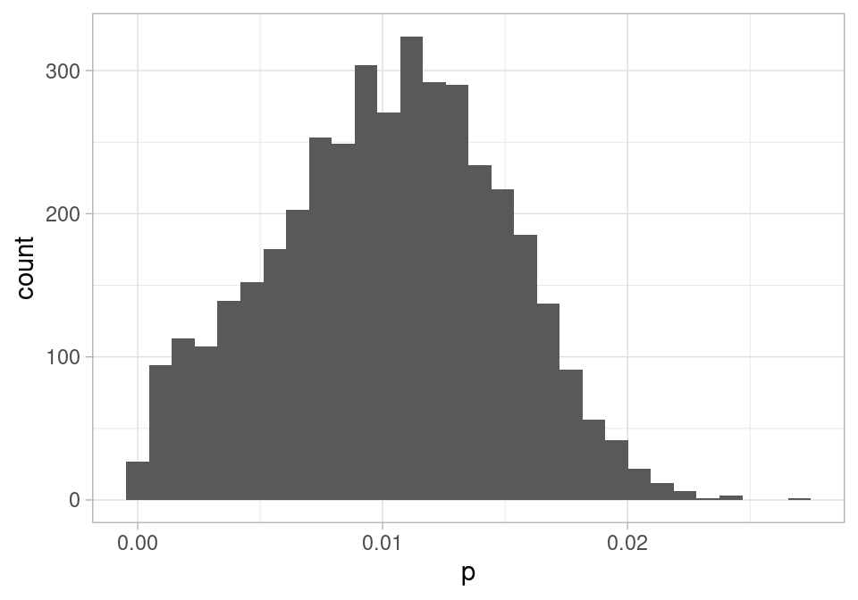
Y vemos que los datos son consistentes con el dato reportado por los autores (alrededor de 1.2%), pero que no podemos excluir valores de prevalencia muy bajos (por abajo de 0.3% por ejemplo). Por otro lado, también son consistentes valores muy altos de seroprevalencia, de manera que este estudio resultó ser poco informativo de la IFR del COVID.
Podemos hacer diagnósticos adicionales acerca de la razón de esta variabilidad alta, si graficamos la relación entre especificidad de la prueba y estimación de prevalencia:
ggplot(sims, aes(x = esp, y = p)) + geom_point() +
xlab("Especificidad del kit") + ylab("Prevalencia") + geom_smooth()`geom_smooth()` using method = 'gam' and formula = 'y ~ s(x, bs = "cs")'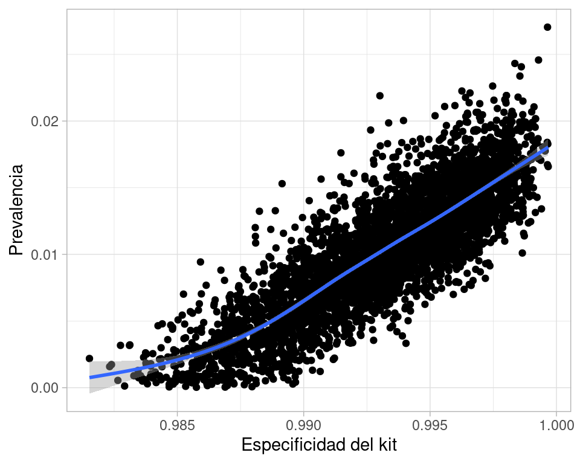
La asociación entre estas dos cantidades es interesante porque conceptualmente (y desde punto de vista del modelo), no hay relación entre estas dos variables: su asociación aparece porque son causas que compiten para explicar una observación.
Aunque aprender el flujo de construcción y validación de modelos en todos sus aspectos no es el objetivo de este curso, mostramos un resumen abajo:
Recordamos el concepto de independencia condicional, que está relacionado a cómo se puede factorizar una conjunta:
Sean \(X,Y,Z\) variables aleatorias. Decimos que \(X\) y \(Y\) son condicionalmente independientes dado \(Z\) cuando se satisface \[p(x,y|z) = p(x|z)p(y|z)\] o equivalentemente, \[p(x|y,z) = p(x|z)\]
En palabras: si conocemos el valor de \(Z\), \(X\) y \(Y\) ya no están asociadas, o si ya condicionamos a z, entonces condicionar adicionalmente a \(Y\) no cambia la distribución condicional de \(X\). Para ver por qué las dos formas son equivalentes recuerda que cualquier regla de probabilidad general puede condicionarse a cualquier infromación y sigue siendo una regla válida. Como de mostramos que \(p(x,y) = p(x)p(y)\) si y sólo si \(p(y|x) = p(y)\), podemos obtener una regla válida condicionando todo a \(Z\).
Este concepto en la modelación e interpretación, por ejemplo en el caso de Santa Clara, prevalencia y número de positivos son dependientes. Pero si conocemos el número de infectados, prevalencia y positivos son condicionalmente independientes, y esto es una idea importante este modelo.
En nuestro primer ejemplo de la sección anterior, observamos que una vez que sabíamos \(X\), la probabilidad de sol, no hay relación entre \(S_1\) y \(S_2\), aún cuando no es cierto que \(p(s_1,s_2) = p(s_1)p(s_2)\).
Podemos checar esto en las simulaciones, por ejemplo:
set.seed(812)
simular_dos(1e5, x = 0.4) |>
select(s_1, s_2) |>
group_by(s_1, s_2) |>
count() |>
group_by(s_1) |>
mutate(prop_cond = n / sum(n)) |>
ggplot(aes(x = s_2, y = prop_cond, colour = s_1, group = factor(s_1))) +
geom_line()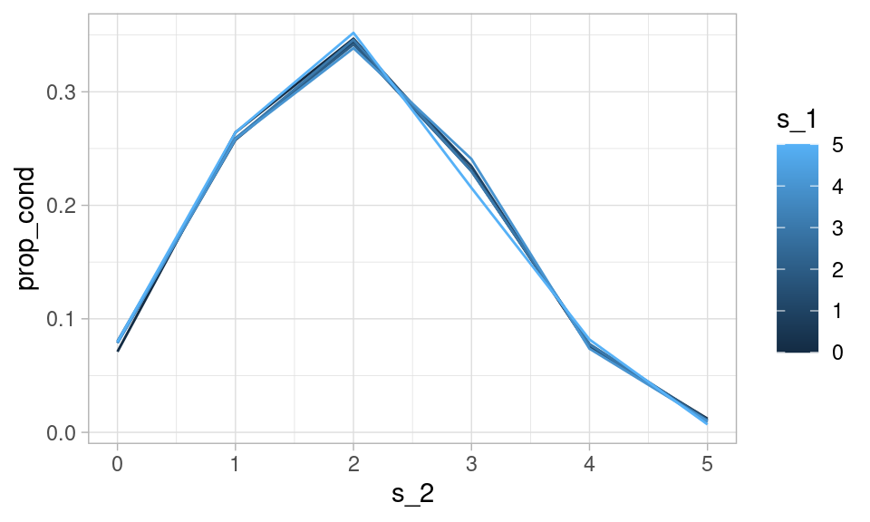
Las condicionales son iguales en cada caso, de modo que \(S_1\) y \(S_2\) son independientes dada \(X\) (prueba con otros valores de \(X\)).
Para representar gráficamente la construcción de modelos que hemos considerado, podemos usar las siguiente idea:
Decimos que una gráfica dirigida \(G\) representa a una conjunta \(p(x_1,\ldots, x_p)\) cuando podemos factorizar
\[p(x_1,\ldots, x_p) = \prod_{i=1}^p p(x_i | pa(x_i))\]
donde \(pa(x_i)\) son los padres del nodo X_i en la gráfica G.
Consideramos la siguiente gráfica:
grViz("
digraph {
graph [ranksep = 0.2]
node [shape=plaintext]
Ob
Fuma
EC
Tos
edge [minlen = 3]
Ob -> EC
Fuma -> EC
Fuma -> Tos
}
", width = 200, height = 50)Esta gráfica representa una conjunta \(p(o,f,c,t)\) cuando es posible factorizar
\[p(ob,f,ec,t) = p(f)p(o)p(ec|o,f)p(t|f),\]
de forma que podemos entender el proceso generador de este conjunto de variables como sigue: simulamos primero \(F\) y \(Ob\), usando el valor de \(F\) podemos simular \(T\), y usando el valor de \(F\) y \(Ob\) podemos simular \(C\). En este ejemplo podemos pensar que las variables son Obesidad, Fumador, Enfermedad de Corazón y Tos. Nótese que la distribución de Enfermedad de Corazón depende del estado de Obesidad y fumador. La probabilidad de tener tos depende directamente del estado de fumador.
El conjunto de independencias condicionales de una conjunta \(p\) está fuertemente ligado a la estructura de la gráfica que la representa:
Una distribución \(p\) es representada por \(G\) si y sólo si para cada variable \(W\), cuando condicionamos a los padres \(pa(W)\) de \(W\), \(W\) es condicionalmente independiente de todas las variables que no son descendientes o padres de \(W\).
Es decir, si condicionamos a los padres de una variable, esta variable es condicionalmente independiente del “pasado”, en el sentido del orden de la gráfica. Estas no son las únicas independencias condicionales que están presentes, veremos que para calcular éstas es necesario usar el concepto de d-separación. Antes discutiremos las estructuras básicas que nos interesan estudiar en una gráfica.
La independencia condicional es un concepto central para construir modelos probabilísticos, pues nos permite construir modelos parsimoniosos.
En nuestro ejemplo anterior, si \(T\) tuviera más padres en lugar de tener que definir o estimar \(p(t|f)\), tendríamos que modelar \(p(t|o,f,c)\), que es un modelo más complicado: por ejemplo, puede tener interacciones complicadas y no linealidades más complejas que el modelo \(f(t|f)\)
Adicionalmente, el conjunto de independencias condicionales también nos dice que implicaciones tiene el modelo que estamos considerando. Más adelante veremos cómo:
Por ejemplo, cuando consideramos las dos colecciones de volados (\(S_1\) y \(S_2\)) dada una misma moneda (\(X\)), podemos entender por qué \(S_1\) y \(S_2\) no son independientes: saber el resultado de \(S_1\), por ejemplo, nos da información acerca la \(X\), lo cual a su vez nos da información de \(S_2\). La información fluye a lo largo de la gráfica correspondiente dado el supuesto que hicimos que las dos series de volados se hacen con una moneda.
Veremos que para razonar acerca de las asociaciones e independencias que pueden aparecer en una conjunta, podemos examinar la gráfica que la represente, o dicho de otra manera, entender bajo qué condiciones puede propagarse información de un nodo a otro.
Consideremos entonces tres variables \(X\), \(Y\) y \(Z\). Las tres estructuras que tenemos que entender en primer lugar pueden verse también como métodos de razonamiento lógico derivados de las leyes de probabilidad:
En este caso tenemos:
grViz("
digraph {
graph [ranksep = 0.2, rankdir=LR]
node [shape=plaintext]
X
Y
Z
edge [minlen = 3]
X -> Z
Z -> Y
}
", width = 150, height = 20)En este caso,
Podemos pensar en \(Z\) como un mediador del efecto de \(X\) sobre \(Y\). Si no permitimos que \(Z\) varíe, entonces la información de \(X\) no fluye a \(Y\).
Por ejemplo, si \(X\) tomar o no una medicina para el dolor de cabeza, \(Z\) es dolor de cabeza y \(Y\) es bienestar general, \(X\) y \(Y\) están relacionadas. Sin embargo, si condicionamos a un valor fijo de dolor de cabeza, no hay relación entre tomar la medicina y bienestar general.
En términos de factorización, podemos checar la independencia condicional: como \(p(x,y,z) = p(x)p(z|x)p(y|z)\), entonces
\[p(x, y | z) = p(x,y,z) / p(z) = (p(x)(z|x)) (p(y|z) / p(z))\] y vemos que el lado izquierdo se factoriza en una parte que sólo involucra a \(x\) y \(z\) y otro factor que sólo tiene a \(y\) y \(z\): no hay términos que incluyan conjuntamente a \(x\), \(y\) y \(z\). Podemos de cualquier forma continuar notando
\[p(x)p(z|x)/p(z) = p(x,z)/p(z) = p(x | z)\] de modo que
\[p(x, y | z) = p(x|z) p(y|z) \]
Y mostramos un ejemplo simulado:
rbern <- function(n, prob){
rbinom(n, 1, prob = prob)
}
simular_mediador <- function(n = 10){
x <- rbern(n, p = 0.5) |> as.numeric()
z <- rbern(n, p = x * 0.8 + (1 - x) * 0.3)
y <- rbinom(n, 2, z * 0.7 + (1 - z) * 0.5)
tibble(x, z, y)
}
sims_mediador <- simular_mediador(50000)\(X\) y \(Y\) son dependientes:
sims_mediador |> select(x, y) |>
count(x, y) |>
group_by(x) |>
mutate(p_cond = n / sum(n)) |>
select(x, y, p_cond) |>
ggplot(aes(x = y, y = p_cond, fill = factor(x))) +
geom_col(position = "dodge") +
labs(subtitle = "Condicional de Y dada X")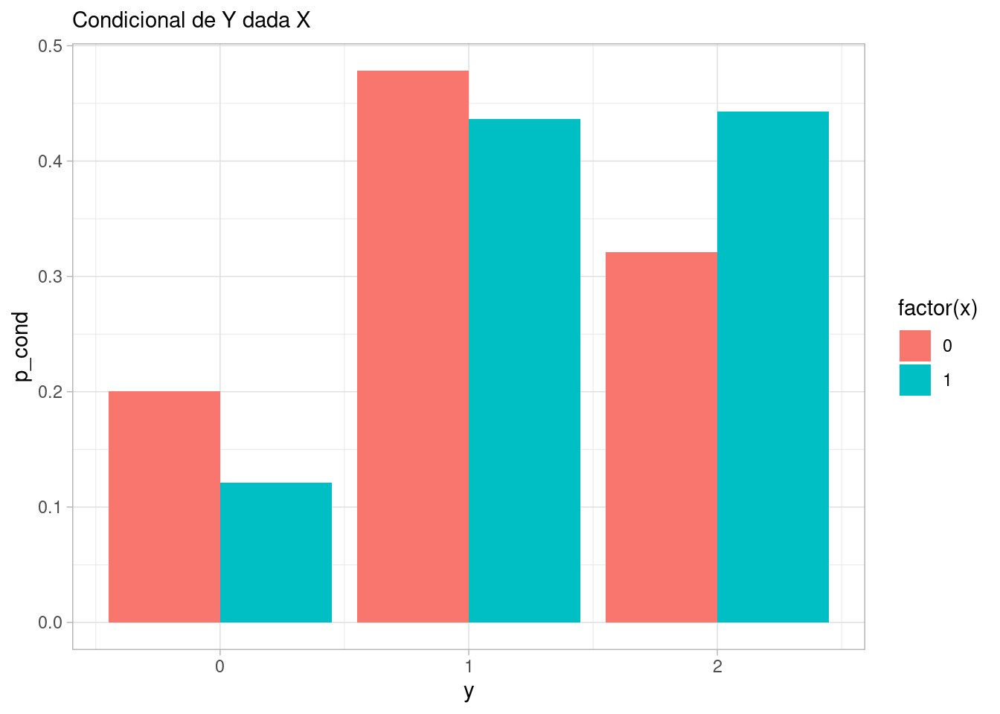
Sin embargo, si condicionamos a \(Z\), que puede tomar los valores 0 o 1:
sims_mediador |>
count(x, y, z) |>
group_by(x, z) |>
mutate(p_cond = n / sum(n)) |>
select(x, y, z, p_cond) |>
ggplot(aes(x = y, y = p_cond, fill = factor(x))) +
geom_col(position = "dodge") + facet_wrap(~ z) +
labs(subtitle = "Condicional de Y dada X y Z")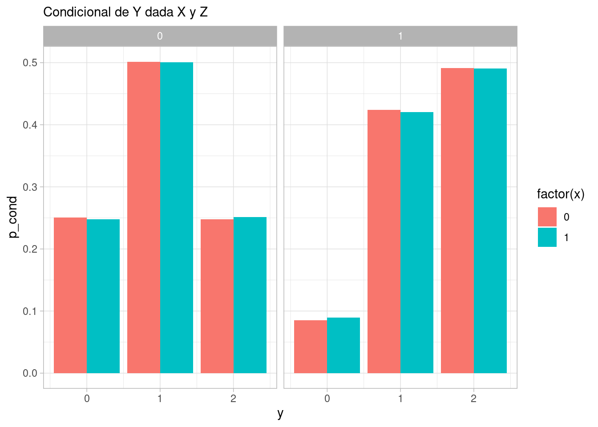
Y vemos que la condicional de \(Y\) dada \(Z\) y \(X\) sólo depende de \(Z\). Una consecuencia es por ejemplo que la correlación debe ser cero:
cor(sims_mediador |> filter(z == 1) |> select(x,y)) |> round(3) x y
x 1.000 -0.004
y -0.004 1.000cor(sims_mediador |> filter(z == 0) |> select(x,y)) |> round(3) x y
x 1.000 0.004
y 0.004 1.000Podemos también hacer un ejemplo continuo:
simular_mediador <- function(n = 10){
x <- rnorm(n, 100, 10)
prob <- 1 / (1 + exp(-(x - 100)/5))
z <- rbern(n, p = prob)
y <- rnorm(n, 100 + 30 * z, 15)
tibble(x, z, y)
}
sims_mediador <- simular_mediador(2000)\(X\) y \(Y\) son dependientes (por ejemplo si vemos la media condicional de \(Y\) dado \(X\):
ggplot(sims_mediador, aes(x = x, y = y, colour = z)) + geom_point() +
geom_smooth(span = 1)`geom_smooth()` using method = 'gam' and formula = 'y ~ s(x, bs = "cs")'Warning: The following aesthetics were dropped during statistical transformation: colour
ℹ This can happen when ggplot fails to infer the correct grouping structure in
the data.
ℹ Did you forget to specify a `group` aesthetic or to convert a numerical
variable into a factor?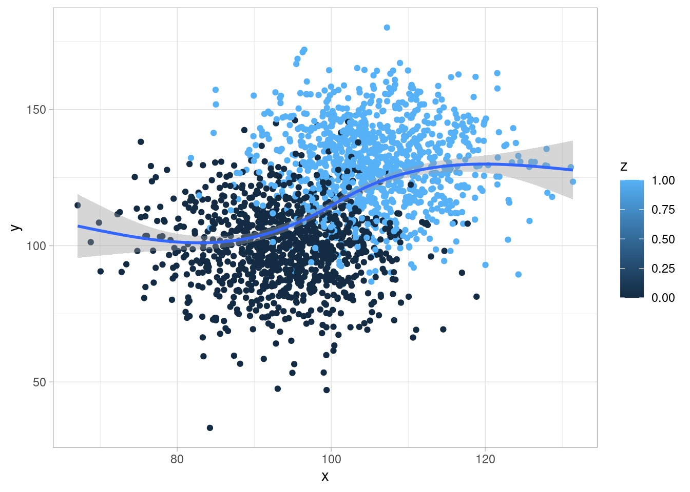
Si condicionamos a \(Z\), no hay dependencia entre \(X\) y \(Y\)
ggplot(sims_mediador, aes(x = x, y = y, colour = z, group = z)) +
geom_point() +
geom_smooth(span = 2)`geom_smooth()` using method = 'gam' and formula = 'y ~ s(x, bs = "cs")'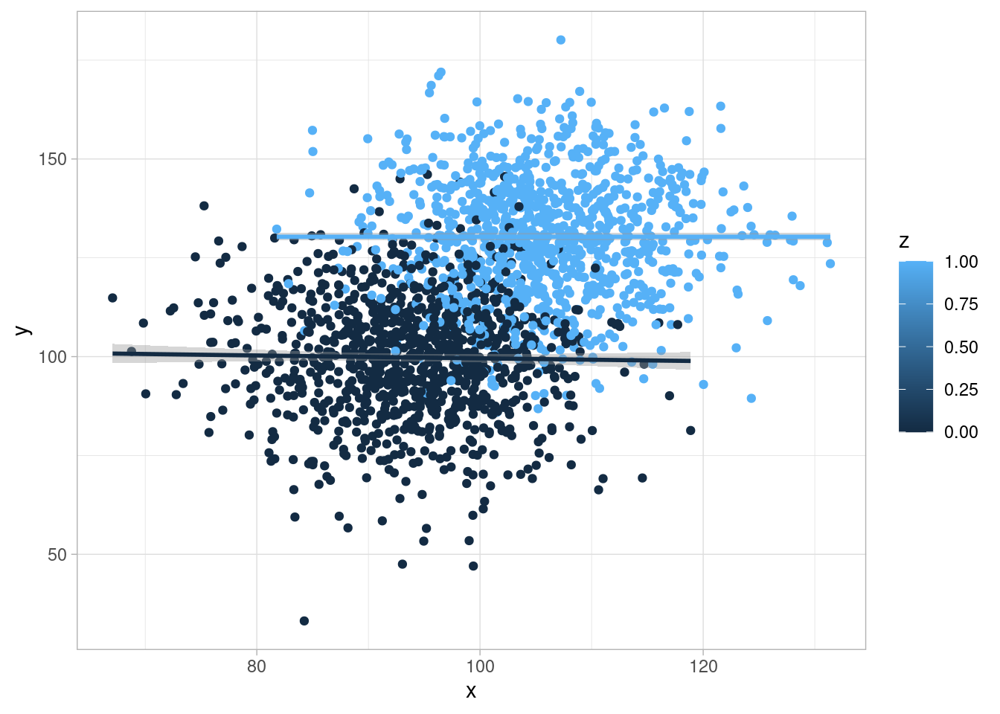
En el siguiente ejemplo, llamamos a \(Z\) una causa que es común a \(X\) y \(Y\).
grViz("
digraph {
graph [ranksep = 0.2]
node [shape=plaintext]
X
Y
Z
edge [minlen = 3]
Z -> X
Z -> Y
}
", width = 200, height = 50)En este caso,
Este tipo de estructura también se llama bifurcación, o decimos que \(Z\) es un confusor en esta gráfica. Variación en \(Z\) produce variación conjunta de \(X\) y \(Y\).
Por ejemplo, podríamos encontrar que el uso de aspirina \(X\) está asociado a una mortalidad más alta \(Y\). Una causa común es enfermedad grave que produce dolor (\(Z\)). Sin embargo, si condicionamos a personas sanas, veríamos que no hay relación entre uso de aspirina y mortalidad, igualmente veríamos que entre las personas enfermas el uso de aspirina no les ayuda a vivir más tiempo.
En este caso, tenemos:
\[p(x, y, z) = p(z)p(x|z)p(y|z)\] Y como el lado izquierdo es igual (en general) a \(p(x,y|z)p(z)\), obtenemos la independiencia condicional de \(X\) y \(Y\) dado \(Z\).
rbern <- function(n, prob){
rbinom(n, 1, prob = prob)
}
simular_confusor <- function(n = 10){
z <- rbern(n, p = 0.5) |> as.numeric()
x <- rbern(n, p = z * 0.3 + (1 - z) * 0.8)
y <- rbinom(n, 4, z * 0.9 + (1 - z) * 0.3)
tibble(x, z, y)
}
sims_confusor <- simular_confusor(50000)\(X\) y \(Y\) son dependientes:
sims_confusor |> select(x, y) |>
count(x, y) |>
group_by(x) |>
mutate(p_cond = n / sum(n)) |>
select(x, y, p_cond) |>
ggplot(aes(x = y, y = p_cond, fill = factor(x))) +
geom_col(position = "dodge") +
labs(subtitle = "Condicional de Y dada X")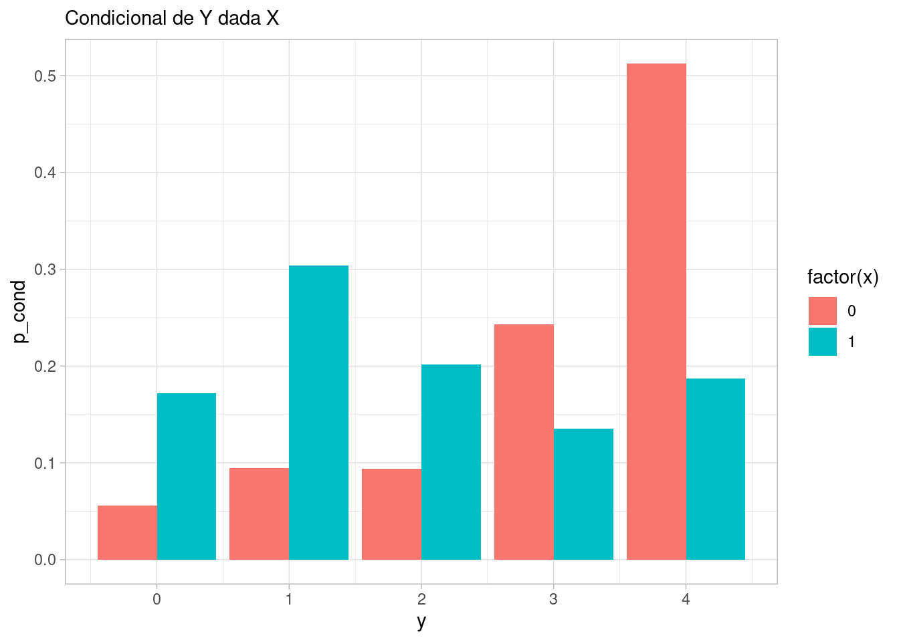
Sin embargo, si condicionamos a \(Z\), que puede tomar los valores 0 o 1:
sims_confusor |>
count(x, y, z) |>
group_by(x, z) |>
mutate(p_cond = n / sum(n)) |>
select(x, y, z, p_cond) |>
ggplot(aes(x = y, y = p_cond, fill = factor(x))) +
geom_col(position = "dodge") + facet_wrap(~ z) +
labs(subtitle = "Condicional de Y dada X y Z")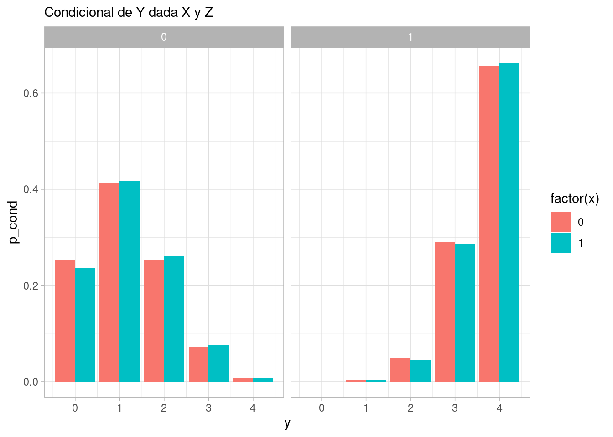
Y vemos que la condicional de \(Y\) dada \(Z\) y \(X\) sólo depende de \(Z\). Una consecuencia es por ejemplo que la correlación debe ser cero:
cor(sims_confusor |> filter(z == 1) |> select(x,y)) |> round(3) x y
x 1.000 0.008
y 0.008 1.000cor(sims_confusor |> filter(z == 0) |> select(x,y)) |> round(3) x y
x 1.000 0.015
y 0.015 1.000simular_bifurcacion <- function(n = 10){
z <- rbern(n, p = 0.5)
x <- rnorm(n, 100 + 20 * z, 15)
y <- rnorm(n, 100 + 30 * z, 20)
tibble(x, z, y)
}
sims_bifurcacion <- simular_bifurcacion(5000)\(X\) y \(Y\) son dependientes (por ejemplo si vemos la media condicional de \(Y\) dado \(X\):
ggplot(sims_bifurcacion, aes(x = x, y = y, colour = z)) +
geom_point(alpha = 0.2) +
geom_smooth(span = 1)`geom_smooth()` using method = 'gam' and formula = 'y ~ s(x, bs = "cs")'Warning: The following aesthetics were dropped during statistical transformation: colour
ℹ This can happen when ggplot fails to infer the correct grouping structure in
the data.
ℹ Did you forget to specify a `group` aesthetic or to convert a numerical
variable into a factor?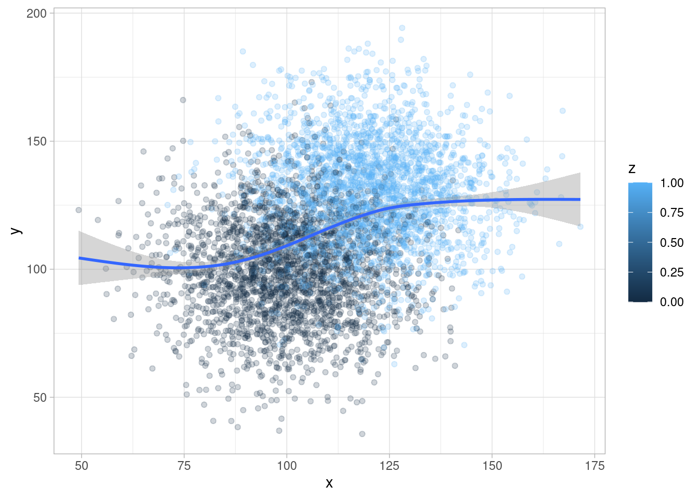
Si condicionamos a \(Z\), no hay dependencia entre \(X\) y \(Y\)
ggplot(sims_bifurcacion, aes(x = x, y = y, colour = z, group = z)) +
geom_point(alpha = 0.2) +
geom_smooth(span = 2)`geom_smooth()` using method = 'gam' and formula = 'y ~ s(x, bs = "cs")'
En este caso, a \(Z\) también le llamamos un colisionador. Este es el caso que puede ser más difícil de entender en un principio.
grViz("
digraph {
graph [ranksep = 0.2]
node [shape=plaintext]
X
Y
Z
edge [minlen = 3]
X -> Z
Y -> Z
}
", width = 200, height = 50)Por ejemplo, si observamos que el pasto está mojado, entonces saber que no llovió implica que probablemente se encendieron los aspersores.
Como la conjunta se factoriza como:
\[p(x,y,z) = p(x)p(y)p(z|x,y)\] podemos integrar sobre \(Z\):
\[p(x,y) = \int p(x,y,z)dz = p(x)p(y)\int p(z|x,y)\, dz\] pero \(p(z|x,y)\) integra uno porque es una densidad, de forma que \(x\) y \(y\) son independientes.
Y mostramos un ejemplo simulado:
simular_colisionador <- function(n = 10){
x <- rbern(n, 0.5)
y <- rbinom(n, 2, 0.7)
z <- rbern(n, p = 0.1 + 0.7 * x * (y > 1))
tibble(x, z, y)
}
sims_colisionador <- simular_colisionador(50000)\(X\) y \(Y\) son independientes:
sims_colisionador|> select(x, y) |>
count(x, y) |>
group_by(x) |>
mutate(p_cond = n / sum(n)) |>
select(x, y, p_cond) |>
ggplot(aes(x = y, y = p_cond, fill = factor(x))) +
geom_col(position = "dodge") +
labs(subtitle = "Condicional de Y dada X")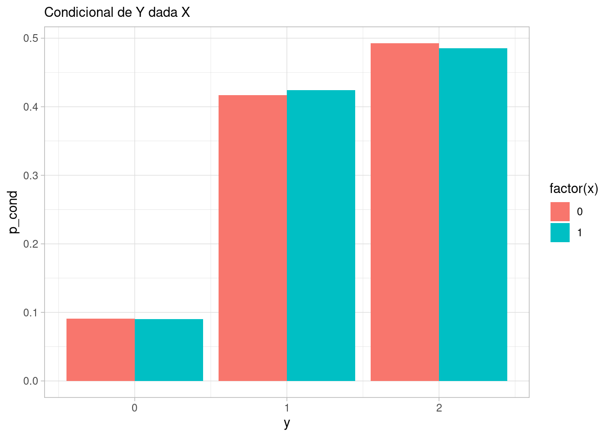
Sin embargo, si condicionamos a \(Z\), que puede tomar los valores 0 o 1:
sims_colisionador |>
count(x, y, z) |>
group_by(x, z) |>
mutate(p_cond = n / sum(n)) |>
select(x, y, z, p_cond) |>
ggplot(aes(x = y, y = p_cond, fill = factor(x))) +
geom_col(position = "dodge") + facet_wrap(~ z) +
labs(subtitle = "Condicional de Y dada X y Z")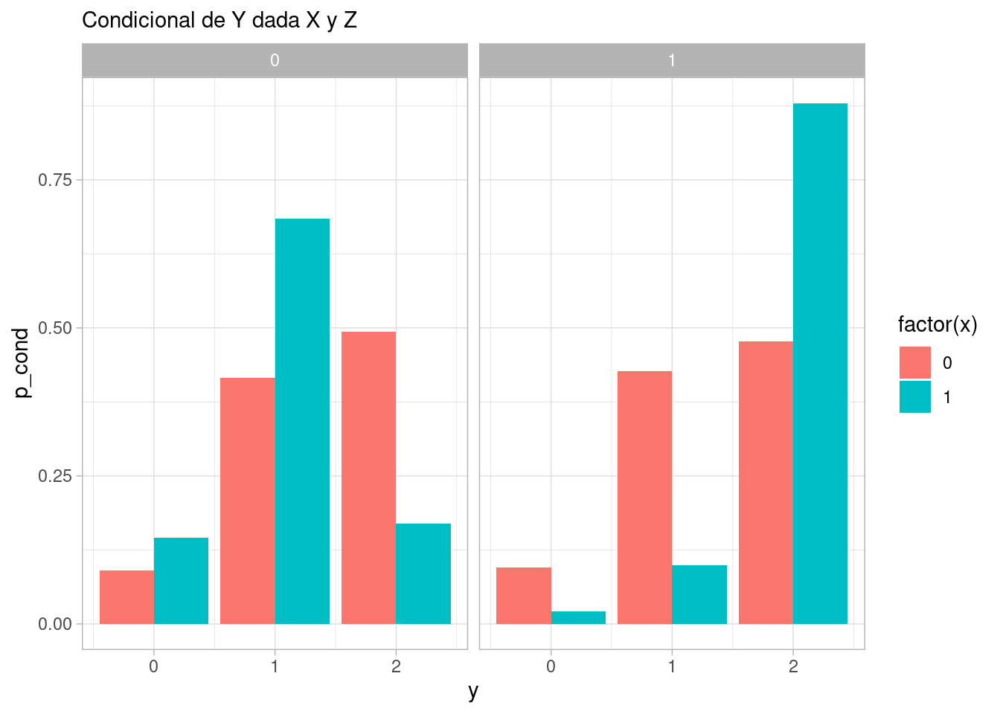
Y vemos que la condicional de \(Y\) dada \(Z\) y \(X\) depende de \(X\) y de \(Z\).
Las correlaciones condicionales, por ejemplo, no son cero:
print("Dado Z = 0")[1] "Dado Z = 0"cor(sims_colisionador |> filter(z == 0) |> select(x,y)) |> round(3) x y
x 1.000 -0.287
y -0.287 1.000print("Dado Z = 1")[1] "Dado Z = 1"cor(sims_colisionador |> filter(z == 1) |> select(x,y)) |> round(3) x y
x 1.000 0.373
y 0.373 1.000Otro ejemplo con variables continuas:
simular_colisionador_2 <- function(n = 10){
x <- rnorm(n, 100, 20)
y <- rnorm(n, 100, 20)
z <- rbern(n, p = 0.92 * ((x + y) > 220) + 0.05)
tibble(x, z, y)
}
sims_colisionador <- simular_colisionador_2(1000)\(X\) y \(Y\) son independientes:
ggplot(sims_colisionador, aes(x = x, y = y)) + geom_point()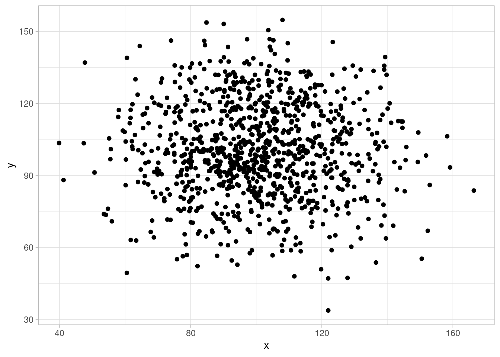
Sin embargo, si condicionamos a un valor de \(Z\), \(X\) y \(Y\) ya no son independientes:
ggplot(sims_colisionador, aes(x = x, y = y, group = z, colour = factor(z))) +
geom_point() + geom_smooth(method = "lm", se = FALSE) `geom_smooth()` using formula = 'y ~ x'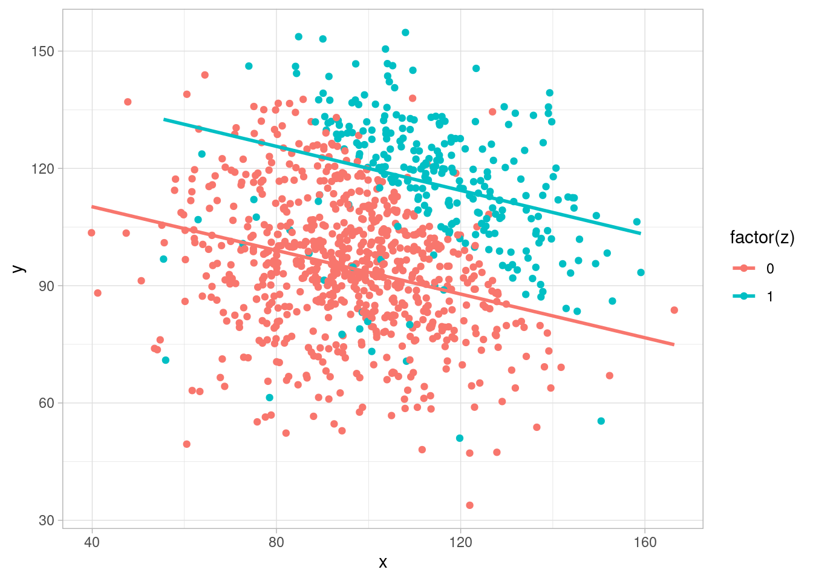
Y vemos que condicional a \(Z\), \(X\) y \(Y\) no son dependientes.
Condicionar a un descendiente de un colisionador también produce dependencias condicionales:
grViz("
digraph {
graph [ranksep = 0.2]
node [shape=plaintext]
X
Y
Z
A
edge [minlen = 3]
X -> Z
Y -> Z
Z -> A
}
", width = 200, height = 50)En este caso,
Dependiendo de la naturaleza de la asociación entre el colisionador \(Z\) y su descendiente \(A\), esta dependencia puede ser más fuerte o más débil.
Por ejemplo, en nuestro ejemplo donde el pasto mojado es un colisionador entre cuánta agua dieron los aspersores y cuánta lluvia cayó, un descendiente del pasto mojado es el estado de las plantas del jardín. Aunque los aspersores trabajan independientemente de la lluvia, si observamos que las plantas se secaron entonces lluvia y aspersores están correlacionados: por ejemplo, si noto que los aspersores están descompuestos, entonces concluimos que no hubo lluvia.
grViz("
digraph {
graph [ranksep = 0.2]
node [shape=plaintext]
X [label = lluvia]
Y [label = aspersores]
Z [label = humedad]
A [label = plantas]
edge [minlen = 3]
X -> Z
Y -> Z
Z -> A
}
", width = 200, height = 50)Verificamos que en nuestro modelo de Santa Clara, efectivamente nuestro modelo no implica ninguna dependencia no condicional entre sensibilidad de la prueba y prevalencia. Eso debería ser claro de la simulación, pero de todas formas lo checamos
library(cmdstanr)
mod_sc <- cmdstan_model("../src/sclara.stan")
print(mod_sc)data {
int<lower=0> N;
int<lower=0> n;
int<lower=0> kit_pos;
int<lower=0> n_kit_pos;
int<lower=0> kit_neg;
int<lower=0> n_kit_neg;
}
parameters {
real<lower=0, upper=1> p; //seroprevalencia
real<lower=0, upper=1> sens; //sensibilidad
real<lower=0, upper=1> esp; //especificidad
}
transformed parameters {
real<lower=0, upper=1> prob_pos;
prob_pos = p * sens + (1 - p) * (1 - esp);
}
model {
// modelo de número de positivos
n ~ binomial(N, prob_pos);
// modelos para resultados del kit
kit_pos ~ binomial(n_kit_pos, sens);
kit_neg ~ binomial(n_kit_neg, esp);
// iniciales para cantidades no medidas
p ~ beta(1.0, 10.0);
sens ~ beta(2.0, 1.0);
esp ~ beta(2.0, 1.0);
}En este caso, no pondremos información acerca de positivos en la prueba:
datos_lista <- list(N = 0, n = 0,
kit_pos = 103, n_kit_pos = 122,
kit_neg = 399, n_kit_neg = 401)
ajuste <- mod_sc$sample(data = datos_lista, refresh = 1000, iter_sampling = 400)Running MCMC with 4 sequential chains...
Chain 1 Iteration: 1 / 1400 [ 0%] (Warmup)
Chain 1 Iteration: 1000 / 1400 [ 71%] (Warmup)
Chain 1 Iteration: 1001 / 1400 [ 71%] (Sampling)
Chain 1 Iteration: 1400 / 1400 [100%] (Sampling)
Chain 1 finished in 0.0 seconds.
Chain 2 Iteration: 1 / 1400 [ 0%] (Warmup)
Chain 2 Iteration: 1000 / 1400 [ 71%] (Warmup)
Chain 2 Iteration: 1001 / 1400 [ 71%] (Sampling)
Chain 2 Iteration: 1400 / 1400 [100%] (Sampling)
Chain 2 finished in 0.0 seconds.
Chain 3 Iteration: 1 / 1400 [ 0%] (Warmup)
Chain 3 Iteration: 1000 / 1400 [ 71%] (Warmup)
Chain 3 Iteration: 1001 / 1400 [ 71%] (Sampling)
Chain 3 Iteration: 1400 / 1400 [100%] (Sampling)
Chain 3 finished in 0.0 seconds.
Chain 4 Iteration: 1 / 1400 [ 0%] (Warmup)
Chain 4 Iteration: 1000 / 1400 [ 71%] (Warmup)
Chain 4 Iteration: 1001 / 1400 [ 71%] (Sampling)
Chain 4 Iteration: 1400 / 1400 [100%] (Sampling)
Chain 4 finished in 0.0 seconds.
All 4 chains finished successfully.
Mean chain execution time: 0.0 seconds.
Total execution time: 0.5 seconds.sims <- ajuste$draws(c("p", "sens", "esp"), format = "df")
resumen <- ajuste$summary(c("p"))ggplot(sims, aes(x = p, y = sens)) + geom_point() +
scale_x_sqrt()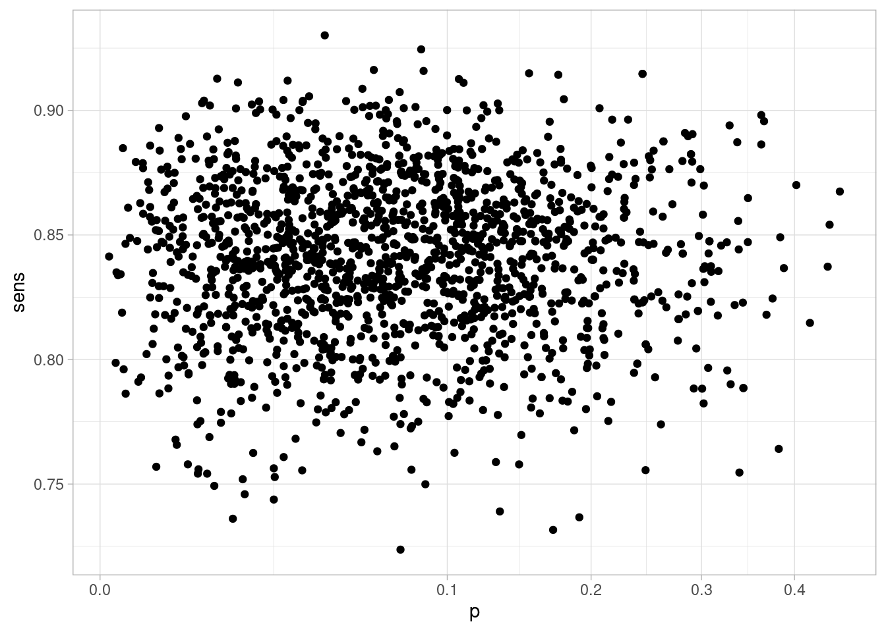
No vemos ninguna asocación entre estas dos variables. Podemos hacer algunas permutaciones al azar para checar que nuestra interpetación de la gráfica es correcta:
library(nullabor)
ggplot(lineup(null_permute("p"), sims, n = 5), aes(x = p, y = sens)) +
geom_point(alpha = 0.3) + facet_wrap(~ .sample) +
scale_x_sqrt()decrypt("0lta Uo1o uQ OhHu1uhQ DD")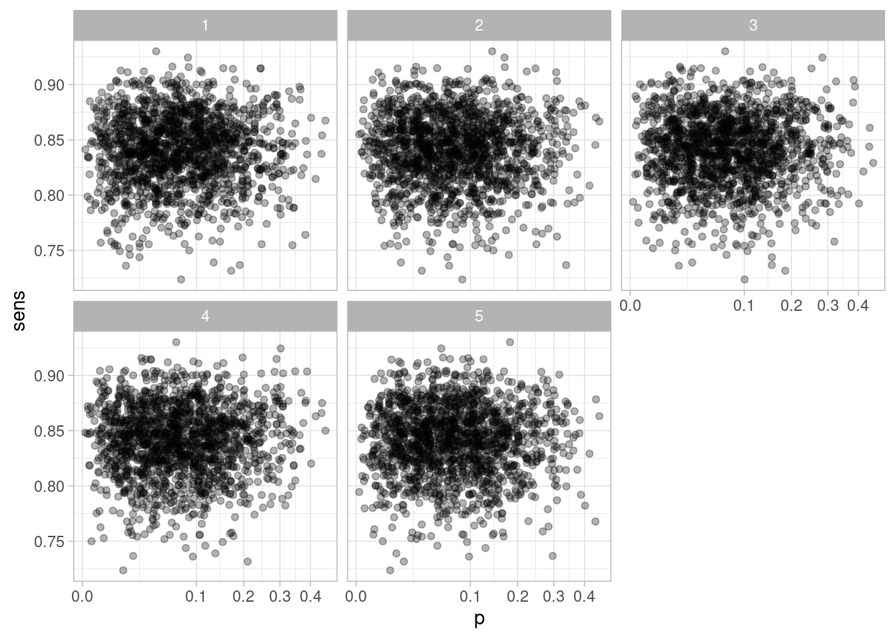
Donde no notamos ninguna diferencia sistemática después de hacer permutaciones.
Sin embargo, al condicionar al valor de Positivos, creamos una relación que no podemos interpretar como casual. En este caso particular supondremos prácticamente fija la sensibilidad para ver solamente lo que sucede en el colisionador de especificidad y número de positivos (la especificidad en este ejemplo es más crítica):
datos_lista <- list(N = 3300, n = 50,
kit_pos = 1030000, n_kit_pos = 1220000, # números grandes para que esté practicamente
# fija la sensibilidad
kit_neg = 399, n_kit_neg = 401)
ajuste <- mod_sc$sample(data = datos_lista, refresh = 1000, iter_sampling = 400)Running MCMC with 4 sequential chains...
Chain 1 Iteration: 1 / 1400 [ 0%] (Warmup)
Chain 1 Iteration: 1000 / 1400 [ 71%] (Warmup)
Chain 1 Iteration: 1001 / 1400 [ 71%] (Sampling)
Chain 1 Iteration: 1400 / 1400 [100%] (Sampling)
Chain 1 finished in 0.0 seconds.
Chain 2 Iteration: 1 / 1400 [ 0%] (Warmup)
Chain 2 Iteration: 1000 / 1400 [ 71%] (Warmup)
Chain 2 Iteration: 1001 / 1400 [ 71%] (Sampling)
Chain 2 Iteration: 1400 / 1400 [100%] (Sampling)
Chain 2 finished in 0.0 seconds.
Chain 3 Iteration: 1 / 1400 [ 0%] (Warmup)
Chain 3 Iteration: 1000 / 1400 [ 71%] (Warmup)
Chain 3 Iteration: 1001 / 1400 [ 71%] (Sampling)
Chain 3 Iteration: 1400 / 1400 [100%] (Sampling)
Chain 3 finished in 0.0 seconds.
Chain 4 Iteration: 1 / 1400 [ 0%] (Warmup)
Chain 4 Iteration: 1000 / 1400 [ 71%] (Warmup)
Chain 4 Iteration: 1001 / 1400 [ 71%] (Sampling)
Chain 4 Iteration: 1400 / 1400 [100%] (Sampling)
Chain 4 finished in 0.0 seconds.
All 4 chains finished successfully.
Mean chain execution time: 0.0 seconds.
Total execution time: 0.5 seconds.sims <- ajuste$draws(c("p", "sens", "esp"), format = "df")
resumen <- ajuste$summary(c("p"))ggplot(sims, aes(x = p, y = esp)) + geom_point() 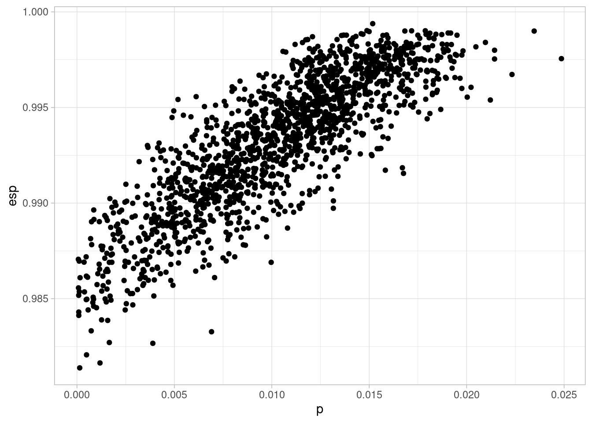
Y vemos que condiconando al colisionador, obtenemos una relación fuerte entre prevalencia y especificidad de la prueba: necesitaríamos más datos de especificidad para obtener una estimación útil.
Con estas tres estructuras elementales podemos entender de manera abstracta la existencia o no de asociaciones entre nodos de cualquier gráfica dirigida.
Ahora buscaremos describir todas las posibles independendencias condicionales y no condicionales que pueden aparecer en una gráfica, para entender cómo aparecen asociaciones entre variables de nuestro modelo, y dependiendo del tipo de condicionamiento que hacemos.
Veremos que el criterio es algorítmico. Más adelante discutiremos cuáles de estas asociaciones se deben a efectos causales y cuáles no, y esto nos permitirá establecer estrategias de condicionamiento (qué variables controlar o no), recolección de datos para construir los estimadores correctos de los efectos causales de interés.
Ahora supongamos que \(Z = \{Z_1,Z_2,\ldots, Z_q\}\) son una colección de nodos. Decimos que un camino \(p\) entre \(X\) y \(Y\) está activo condicional a los nodos en \(Z\) cuando:
En caso contrario, decimos que el camino \(p\) está bloqueado.
Si \(Z\) bloquea todos los caminos posibles entre \(X\) y \(Y\), decimos que \(X\) y \(Y\) están \(d\)-separados condicionalmente a \(Z\), o \(d\)-separados por \(Z\).
Según la discusión que tuvimos arriba de los modos de razonamiento en gráficas de modelos probabilísticos, el siguiente teorema no es sorpresa:
En una DAG \(G\):
Nota 1: nótese que este teorema nos da una manera abstracta de razonar acerca de la asociación en un modelo gráfico: no es necesario saber la forma particular de las condicionales para utilizarlo.
Nota 2: Vale la pena mencionar que el segundo inciso en general es una implicación más fuerte: cuando no hay \(d\)-separación, existe algún tipo de dependencia casi seguro (en el sentido probabilístico de posible conjuntas).
Nota 3: Las independencias condicionales también pueden ser útiles para checar los supuestos de nuestro modelo: si encontramos asociaciones fuertes (condicionales o no) entre variables que nuestra estructura implica independencia condicional, entonces puede ser que nuestra estructura causal requiera revisión. Qué tanto podemos probar esto depende del tamaño de los datos que tengamos y de el tipo de condicionamiento que estamos haciendo.
Finalmente (ver por ejemplo Koller y Friedman (2009), p 75), existe un algoritmo eficiente para encontrar todas las posibles independencias condicionales implicadas por una gráfica:
Existe un algoritmo de complejidad lineal en el tamaño de la gráfica para encontrar todos los nodos con caminos activos a un nodo \(X\) condicional a las variables \(A\).
Ver por ejemplo el sitio dagitty.net, donde podemos poner nuestra gráfica y enlistar todas los supuestos de independencia condicional implicados por un modelo.
grViz("
digraph {
graph [ranksep = 0.2]
node [shape=plaintext]
Z
W
X
Y
U
edge [minlen = 3]
Z -> W
X -> W
X -> Y
W -> U
S -> Y
UZ -> Z
V -> Z
V -> S
}
")Consideremos la relación entre Z y Y. Primero vemos que hay dos caminos entre \(Z\) y \(Y\), que son \(p_1:X\gets V \to S\) y \(p_2: Z\to W \gets X \to Y\)
En primer lugar, ¿son independientes si no condicionamos a ninguna variable? No, pues el camino \(p_1\) es activo, e induce correlación.
¿Son condicionalmente independientes si condicionamos a \(V\)? En este caso, condicionar a \(V\) bloquea el camino \(p_1\). El camino \(p_2\) está bloqueado por el colisionador \(W\), así que todos los caminos están bloqueados si condicionamos a \(V\).
Si condicionamos a \(W y V\), ¿son independientes? No. El camino \(p_1\) está bloqueado, así que ese no induce asociación. Sin embargo, al condicionar al colisionador \(W\) activamos el camino \(p_2\).
Ahora supongamos que tenemos datos condicionales a algún valor de \(W\) solamente. Condicionando a \(V\) bloqueamos el camino \(p_1\), pero el camino \(p_2\) está activo. ¿Qué pasaría si condicionamos adicionalmente a \(X\)? En este caso, el conjunto de condicionamiento es \(\{V, W, X\}\). El camino \(p_2\) está bloqueado. Y aunque condicionamos al colisionador, \(X\) bloque el camino. Por lo tanto \(Z\) y \(Y\) son condicionalmente independientes dado \(\{V, W, X\}\).
Repite el ejemplo anterior para la siguiente gráfica. Analiza que pasa si condicionamos o no a valores de \(T\), y qué pasa si adicionalmente condicionamos a \(W\), y luego repite los pasos del ejemplo anterior.
grViz("
digraph {
graph [ranksep = 0.2]
node [shape=plaintext]
Z
W
X
Y
U
T
edge [minlen = 3]
T -> Z
T -> Y
Z -> W
X -> W
X -> Y
W -> U
S -> Y
UZ -> Z
}
")Si el DAG que consideramos representa relaciones causales (mecanísticas) entre las variables, es decir, qué variable “escucha” a qué otras para decidir su valor, entonces podemos hacer una definición adicional
En un DAG, los caminos causales entre \(X\) y \(Y\) son de la forma \(X\to U_1\to U_2 \to \cdots U_j \to Y\). Puede haber varios de ellos en un diagrama dado, y cada uno representa un mecanismo en que cambios en \(X\) producen cambios en \(Y\)
Si nos interesa el efecto total de \(X\) sobre \(Y\),